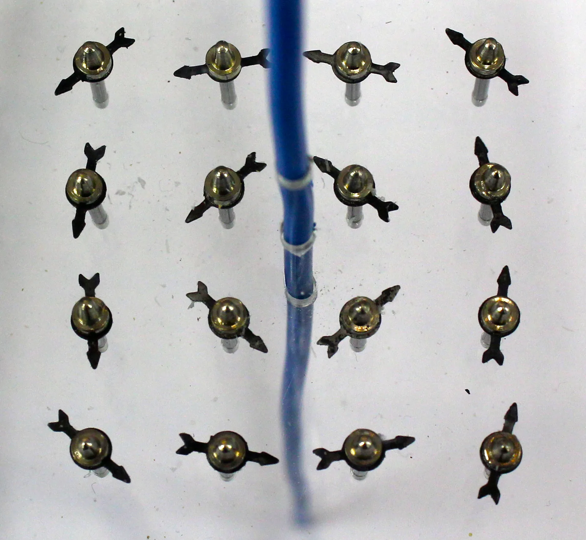

Virtajohtimen ja käämin magneettikenttä
Miksi romuttamon nosturin magneetti nostaa tonnin painoisen autonromun ilmaan ja päästää sen irti napin painalluksella, vaikka jääkaappimagneetti ei päästä irti koskaan?
Pohjatiedot
- Magneettikentän suunta on kompassin pohjoispään suunta, ja sauvamagneetin ulkopuolella kenttäviivat kulkevat pohjoisnavalta etelänavalleluku Magneetit, magneettinen dipoli ja magneettikenttä
- Magneettivuon tiheyden $B$ yksikkö on tesla, ja Maan magneettikenttä on Suomessa noin $50\,\mu\text{T}$luku Magneetit, magneettinen dipoli ja magneettikenttä
Ydinpolku: etene vaiheiden mukaan. Ydinpolkuun kuuluvat laskujen lisäksi tutkimukset, selitykset ja kuvaajat. Valinnainen-merkityt tehtävät tarjoavat lisäharjoittelua. Valinnaisia tehtäviä 5.
Pohdinta
Pöydällä on kompassi, ja sen yläpuolella kulkee pohjois–eteläsuuntainen kuparijohdin. Kun johtimeen kytketään virta $3\,\text{A}$, neula kääntyy lähes poikittain johtimeen nähden, kun johdin on aivan neulan yläpuolella. Kun virran suunta vaihdetaan, neula kääntyy toiseen suuntaan, ja kun virta katkaistaan, neula palaa osoittamaan pohjoiseen. Kupari ei ole magneettista ainetta: kuparinaula ei tartu magneettiin.
Mistä kompassia kääntävä magneettikenttä tulee, ja miten saman ilmiön voi tehdä niin voimakkaaksi, että se nostaa autonromun?
Valinnainen Kertaa: kompassi magneettikentässä
Ennusta
Tee ennusteet ennen tutkimista 2 kysymystä
Ennuste 1: venytetty käämi
Ennuste 2: käämin pää
Tutki
Käämin akselilla liikkuu magneettikenttäanturi. Muuta virtaa, kierroksia, käämin pituutta ja anturin paikkaa ja seuraa, miten magneettivuon tiheys muuttuu.
Simulaatio
Käyttöohje
Säädä virta $I$, kierrosten lukumäärä $N$, käämin pituus $l$ ja anturin paikka $x$ käämin keskeltä mitattuna. Anturin lukema näkyy anturin yläpuolella ja lukemissa. Alempi kuvaaja näyttää magneettivuon tiheyden $B$ koko akselilla; vaalea alue on käämin kohta, ja rengastettu piste on anturin paikka. Virran suunnan valinta kääntää kentän ja vaihtaa napojen paikat. Nopeus muuttaa vain virtamerkkien liikkeen tahtia.
Mallin oletukset
Käämin säde on $2{,}0\,\text{cm}$, ja kierrokset ovat tasavälein koko pituudella. Malli laskee kentän vain käämin akselilla laskemalla yhteen kaikkien kierrosten kentät. Käämissä ei ole rautasydäntä, eikä Maan magneettikenttää ole otettu mukaan. Kenttäviivat on piirretty kaavamaisesti, ja yksi piirretty kierros vastaa kahtakymmentä todellista. Lukemat ovat mallin arvoja, eivät mittauksia.
Laskennan selitys
Käämin keskellä ja sen akselilla etäisyydellä $x$ keskeltä malli laskee
$$\begin{aligned} B &= \frac{\mu_0\, N I}{2 l}\,(k_1 - k_2) \\ k_1 &= \frac{x + \tfrac{l}{2}}{\sqrt{(x + \tfrac{l}{2})^2 + R^2}} \\ k_2 &= \frac{x - \tfrac{l}{2}}{\sqrt{(x - \tfrac{l}{2})^2 + R^2}} \end{aligned}$$
missä $R = 2{,}0\,\text{cm}$ on käämin säde ja $\mu_0 = 4\pi \cdot 10^{-7}\,\tfrac{\text{Vs}}{\text{Am}}$. Kun käämi on paljon pidempi kuin sen säde, keskikohdan arvo on lähes $B = \mu_0 \tfrac{N I}{l}$: esimerkiksi oletusarvoilla $1{,}23\,\text{mT}$, kun pitkän käämin kaava antaa $1{,}26\,\text{mT}$. Kierrostiheys on $n = N : l$.
Koe 1: vain käämin pituus muuttuu
Testaa ennuste 1. Virta, kierrosten määrä ja anturin paikka käämin keskellä pysyvät vakioina; muuta vain käämin pituutta. Kirjaa magneettivuon tiheys ainakin pituuksilla $20\,\text{cm}$ ja $40\,\text{cm}$, halutessasi myös $10\,\text{cm}$ ja $30\,\text{cm}$. Vertaa $B$:tä ja kierrostiheyttä $n$.
Alkutila: virta = $2\,\text{A}$, kierroksia: 200 kierrosta, käämin pituus = $20\,\text{cm}$, anturin paikka = $0\,\text{cm}$, virran suunta: etupuolella alaspäin. Vakiona: virta, kierroksia, anturin paikka, virran suunta. Muutetaan: käämin pituus $(\text{cm})$.
| käämin pituus $(\text{cm})$ | $B$ $(\text{mT})$ | $n$ (1/m) |
|---|
Koe 2: vain anturin paikka muuttuu
Testaa ennuste 2. Käämin pituus on $20\,\text{cm}$, joten sen päät ovat kohdissa $x = -10\,\text{cm}$ ja $x = 10\,\text{cm}$. Siirrä vain anturia ja kirjaa $B$ ainakin keskeltä ja käämin päästä, halutessasi myös kohdista $5\,\text{cm}$ ja $15\,\text{cm}$.
Alkutila: virta = $2\,\text{A}$, kierroksia: 200 kierrosta, käämin pituus = $20\,\text{cm}$, anturin paikka = $0\,\text{cm}$, virran suunta: etupuolella alaspäin. Vakiona: virta, kierroksia, käämin pituus, virran suunta. Muutetaan: anturin paikka.
| anturin paikka | $B$ $(\text{mT})$ |
|---|
Johtopäätös: mikä määrää käämin kentän?
Kirjoita taulukoidesi perusteella: miten käämin keskellä oleva kenttä muuttui, kun sama käämi venytettiin kaksinkertaiseen pituuteen? Mikä suure siis määrää kentän? Miten kenttä muuttui, kun anturi siirtyi keskeltä käämin päähän ja sen ulkopuolelle?
Mallivastaus
Kun $200$ kierroksen käämi venytettiin $20\,\text{cm}$:stä $40\,\text{cm}$:iin, keskikohdan kenttä pieneni noin puoleen, mallin arvoista $2{,}46\,\text{mT}$ arvoon $1{,}25\,\text{mT}$. Samalla kierrostiheys $n = N : l$ puolittui. Kenttää ei siis määrää kierrosten kokonaismäärä vaan kierrostiheys ja virta. Kokeessa 2 kenttä pysyi lähes samana käämin keskiosassa ($2{,}46\,\text{mT}$ keskellä, $2{,}41\,\text{mT}$ kohdassa $5\,\text{cm}$), oli käämin päässä noin puolet ($1{,}25\,\text{mT}$) ja heikkeni käämin ulkopuolella nopeasti. Pitkän käämin sisällä kenttä on siis lähes homogeeninen, mutta ei aivan päihin asti. Mallissa ei ole rautasydäntä eikä Maan kenttää.
Arvioi oma vastauksesi
Rastita kohdat, jotka omassa vastauksessasi jo on.
Kertaa asia teoriasta ja harjoittele tehtävillä.
Mittaus: tyhjiön permeabiliteetti käämistä
Keksitty esimerkkiaineisto
Ryhmä mittasi magneettivuon tiheyden käämin keskeltä magneettikenttäanturilla. Käämissä on $N = 320$ kierrosta, ja sen pituus mitattiin viivaimella: $l = 16{,}0\,\text{cm}$, epävarmuus $\Delta l = 0{,}2\,\text{cm}$. Käämin halkaisija on $3{,}0\,\text{cm}$. Virtaa muutettiin virtalähteellä, ja jokaisella virralla kirjattiin lukemat.
| $I$ (A) | $B$ (mT) |
|---|---|
| $0{,}00$ | $0{,}04$ |
| $0{,}50$ | $1{,}27$ |
| $1{,}00$ | $2{,}51$ |
| $1{,}50$ | $3{,}69$ |
| $2{,}00$ | $4{,}99$ |
| $2{,}50$ | $6{,}20$ |
Vernier Graphical Analysis sovitti pisteisiin suoran $B = A I + B_0$ ja ilmoitti kulmakertoimen $A = 2{,}465\,\tfrac{\text{mT}}{\text{A}}$, sen epävarmuuden $\Delta A = 0{,}012\,\tfrac{\text{mT}}{\text{A}}$ ja vakiotermin $B_0 = 0{,}035\,\text{mT}$. Todellisissa mittaussarjoissa mittauspisteet eivät yleensä sijaitse täsmälleen samalla suoralla mittausepävarmuuden vuoksi.
Määritä mittauksesta tyhjiön permeabiliteetti $\mu_0$. Anna vastaus muodossa $\ldots \cdot 10^{-6}\,\tfrac{\text{Vs}}{\text{Am}}$ eli kirjoita vastaukseksi kerroin.
Vihje 1: ohjaava kysymys
Mitä suoran kulmakerroin $A$ tarkoittaa käämin kaavassa $B = \mu_0 \tfrac{N}{l} I$?
Vihje 2: mikä yhteys
Kulmakerroin on $A = \mu_0 \tfrac{N}{l}$, joten $\mu_0 = A l : N$. Muunna ensin $A$ yksikköön $\tfrac{\text{T}}{\text{A}}$ ja $l$ metreiksi.
Vihje 3: välivaihe
Näytä ratkaisu
Annettu
kierroksia $N = 320$, käämin pituus $l = 16{,}0\,\text{cm}$, sovitetun suoran kulmakerroin $A = 2{,}465\,\tfrac{\text{mT}}{\text{A}}$
Kysytty
tyhjiön permeabiliteetti $\mu_0$ yksikössä $\tfrac{\text{Vs}}{\text{Am}}$
Periaate
Pitkän käämin keskellä $B = \mu_0 \tfrac{N}{l} I$, joten $B$ on suoraan verrannollinen virtaan ja suoran kulmakerroin on $\mu_0 \tfrac{N}{l}$. Kulmakerroin luetaan sovitetusta suorasta eikä kahdesta mittauspisteestä, koska suora ottaa huomioon kaikki pisteet. Vakiotermi $B_0$ ei vaikuta kulmakertoimeen.
Kuvaajan lukeminen
Sovitettu suora kulkee likimain pisteiden $(0$; $0{,}04\,\text{mT})$ ja $(2{,}5\,\text{A}$; $6{,}2\,\text{mT})$ kautta, joten kulmakerroin on noin
ohjelman tarkka arvo on $2{,}465\,\tfrac{\text{mT}}{\text{A}}$.
Kaava
$A = \mu_0 \dfrac{N}{l}$, josta $\mu_0 = \dfrac{A l}{N}$
Muunnokset
Yksikkö:
Sijoitus
Vastaus
$\mu_0 \approx 1{,}23 \cdot 10^{-6}\,\tfrac{\text{Vs}}{\text{Am}}$
Kolme merkitsevää numeroa kuten pituudessa $16{,}0\,\text{cm}$.
Järkevyys
Taulukkoarvo on
Mittaus antaa noin $2\,\%$ pienemmän arvon. Ero on hieman suurempi kuin mittausepävarmuus, ja sen syy selviää seuraavassa tehtävässä. Pieni ero on odotettavissakin, koska lyhyen käämin keskellä kenttä on hieman pienempi kuin pitkän käämin kaava antaa.
Tuloksen epävarmuus
Arvioi edellisen mittauksen tuloksen $\mu_0$ suhteellinen epävarmuus. Ota huomioon kulmakertoimen epävarmuus $\Delta A = 0{,}012\,\tfrac{\text{mT}}{\text{A}}$ ja pituuden epävarmuus $\Delta l = 0{,}2\,\text{cm}$; kierrosten lukumäärä tunnetaan tarkasti. Laske tekijöiden suhteelliset epävarmuudet yhteen. Anna vastaus prosentteina.
Vihje 1: ohjaava kysymys
Tulos on $\mu_0 = A l : N$. Kun suureet kerrotaan tai jaetaan, mitkä epävarmuudet lasketaan yhteen?
Vihje 2: mikä yhteys
Yksinkertainen arvio: tulon ja osamäärän suhteellinen epävarmuus on tekijöiden suhteellisten epävarmuuksien summa, $\tfrac{\Delta \mu_0}{\mu_0} = \tfrac{\Delta A}{A} + \tfrac{\Delta l}{l}$.
Vihje 3: välivaihe
$\tfrac{\Delta A}{A} = 0{,}012 : 2{,}465$ ja $\tfrac{\Delta l}{l} = 0{,}2 : 16{,}0$.
Näytä ratkaisu
Annettu
$A = 2{,}465\,\tfrac{\text{mT}}{\text{A}}$, $\Delta A = 0{,}012\,\tfrac{\text{mT}}{\text{A}}$, $l = 16{,}0\,\text{cm}$, $\Delta l = 0{,}2\,\text{cm}$, $N = 320$ tarkasti; edellisestä tehtävästä $\mu_0 = 1{,}23 \cdot 10^{-6}\,\tfrac{\text{Vs}}{\text{Am}}$
Kysytty
suhteellinen epävarmuus $\Delta \mu_0 : \mu_0$ prosentteina
Periaate
Tulos lasketaan tulona ja osamääränä $\mu_0 = A l : N$. Yksinkertainen arvio epävarmuudelle saadaan laskemalla tekijöiden suhteelliset epävarmuudet yhteen. Kierrosten määrä on laskettu, joten se ei lisää epävarmuutta.
Kaava
Muunnokset
Ei tarvita: kummassakin osamäärässä yksiköt supistuvat, kun osoittaja ja nimittäjä ovat samassa yksikössä.
Sijoitus
Vastaus
noin $1{,}7\,\%$, kaksi merkitsevää numeroa, koska epävarmuus on itsekin arvio. Siis $\Delta \mu_0 \approx 0{,}017 \cdot 1{,}23 \cdot 10^{-6}\,\tfrac{\text{Vs}}{\text{Am}} \approx 0{,}02 \cdot 10^{-6}\,\tfrac{\text{Vs}}{\text{Am}}$ ja tulos $\mu_0 = (1{,}23 \pm 0{,}02) \cdot 10^{-6}\,\tfrac{\text{Vs}}{\text{Am}}$.
Järkevyys
Pituuden mittaus on suurin epävarmuuden lähde, mikä on uskottavaa: $2\,\text{mm}$ on $16\,\text{cm}$:stä yli prosentti. Taulukkoarvo $1{,}257 \cdot 10^{-6}\,\tfrac{\text{Vs}}{\text{Am}}$ jää hieman välin $1{,}21$–$1{,}25$ ulkopuolelle. Ero viittaa systemaattiseen virheeseen: käämin halkaisija on $3{,}0\,\text{cm}$, joten se ei ole kovin pitkä paksuuteensa verrattuna, ja sen keskellä kenttä on noin $98\,\%$ pitkän käämin kaavan arvosta. Kun tämä otetaan huomioon, tulos on noin $1{,}25 \cdot 10^{-6}\,\tfrac{\text{Vs}}{\text{Am}}$.
Teoria
Ydinajatus
Sähkövirta synnyttää magneettikentän
Vuonna 1820 tanskalainen Hans Christian Ørsted huomasi luennollaan, että kompassin neula kääntyi, kun viereiseen johtimeen kytkettiin virta. Kun virta katkaistiin, neula palasi osoittamaan pohjoiseen. Havainto yhdisti sähkön ja magnetismin: jokaisen virtajohtimen ympärillä on magneettikenttä. Kenttä syntyy liikkuvista varauksista, joten johtimen ei tarvitse olla magneettista ainetta; kuparijohdinkin synnyttää kentän. Kun virta kasvaa, kenttä voimistuu, ja kun virran suunta vaihtuu, myös kentän suunta vaihtuu.
Suoran johtimen kenttäviivat ovat johtimen ympärillä samankeskisiä ympyröitä, jotka ovat kohtisuorassa johdinta vastaan. Kenttä ei siis osoita johtimesta poispäin eikä johdinta kohti, vaan kiertää sitä. Johtimen ympärille asetetut kompassit kääntyvät ympyrän tangentin suuntaan, kun johtimen kenttä on paljon Maan magneettikenttää voimakkaampi. Mitä kauempana johtimesta ollaan, sitä heikompi kenttä on.

Oikean käden sääntö
Kentän kiertosuunta saadaan oikean käden säännöllä: kun oikean käden peukalo osoittaa virran suuntaan, koukistetut sormet kiertävät kenttäviivojen suuntaan. Kuvassa virta kulkee ylöspäin, joten ylhäältä katsottuna kenttä kiertää vastapäivään. Kuvissa virta kohti katsojaa merkitään pisteellä $\odot$ ja virta poispäin katsojasta ristillä $\otimes$, kuten nuolen kärki ja sulat.
Käämin kenttä
Kun johdin kierretään kierukaksi eli käämiksi, jokaisen kierroksen kenttä osoittaa käämin sisällä samaan suuntaan, ja kentät vahvistavat toisiaan. Pitkän käämin sisällä kenttäviivat ovat lähes suoria ja tasavälisiä: kenttä on lähes homogeeninen ja käämin akselin suuntainen. Käämin päissä kenttäviivat levenevät, ja käämin ulkopuolella kenttä on samanlainen kuin sauvamagneetin kenttä luvussa Magneetit, magneettinen dipoli ja magneettikenttä. Pää, josta kenttäviivat tulevat ulos, on pohjoisnapa N. Oikean käden sääntö toimii käämille näin: kun sormet kiertävät kierroksia pitkin virran suuntaan, peukalo osoittaa käämin sisällä kentän suuntaan eli kohti pohjoisnapaa.
Sähkömagneetti
Kun käämin sisään työnnetään rautasydän, kenttä voimistuu moninkertaiseksi. Käämin kenttä kääntää raudan alkeisalueet samansuuntaisiksi, ja magnetoitunut rauta lisää oman kenttänsä käämin kenttään. Tällainen käämi on sähkömagneetti. Kun virta katkaistaan, käämin kenttä häviää, ja pehmeän raudan alkeisalueet palaavat lähes epäjärjestykseen, joten sydän menettää magnetoitumansa lähes kokonaan. Siksi romuttamon nosturi pitää romua vain niin kauan kuin virta kulkee. Kestomagneetti taas on ainetta, jonka alkeisalueet pysyvät järjestyksessä, joten sitä ei voi kytkeä pois.
Suoran johtimen ja käämin magneettikenttä
Pitkän suoran johtimen magneettivuon tiheys etäisyydellä $r$ johtimesta on
$$B = \frac{\mu_0 I}{2\pi r}$$
missä $B$ on magneettivuon tiheys (T), $I$ johtimen virta (A), $r$ etäisyys johtimesta (m) ja $\mu_0 = 4\pi \cdot 10^{-7}\,\tfrac{\text{Vs}}{\text{Am}}$ tyhjiön permeabiliteetti, luonnonvakio. Ilmassa käytetään samaa arvoa. Kenttä on suoraan verrannollinen virtaan ja kääntäen verrannollinen etäisyyteen: kaksinkertainen etäisyys puolittaa kentän. Kaava pätee, kun johdin on paljon pidempi kuin etäisyys $r$ ja muut johtimet ovat kaukana. Esimerkiksi $10\,\text{A}$:n johtimen kenttä on $1\,\text{cm}$:n etäisyydellä $200\,\mu\text{T}$, mikä on noin nelinkertainen Maan magneettikenttään noin $50\,\mu\text{T}$ verrattuna.
Pitkän käämin sisällä, kaukana sen päistä, magneettivuon tiheys on
$$B = \mu_0 \frac{N I}{l}$$
missä $N$ on käämin kierrosten lukumäärä, $I$ virta (A) ja $l$ käämin pituus (m). Kenttä riippuu kierrostiheydestä $N : l$ eli siitä, kuinka monta kierrosta on metrillä, eikä käämin paksuudesta. Kaava pätee, kun käämi on paljon pidempi kuin paksu ja sen sisällä on vain ilmaa. Käämin päissä kenttä on noin puolet keskikohdan arvosta, ja rautasydän voimistaa kenttää moninkertaiseksi.
Magneettivuon tiheyden määrittäminen käämin sisällä
Kenttää mitataan magneettikenttäanturilla, jonka kärki asetetaan käämin keskelle akselin suuntaiseksi. Virtaa muutetaan virtalähteellä, ja jokaisella virralla kirjataan virta ja anturin lukema $B$. Kun mittauspisteet piirretään $(I, B)$-koordinaatistoon esimerkiksi Vernier Graphical Analysis -ohjelmalla, niihin sovitetaan suora $B = A I + B_0$. Kaavan mukaan kulmakerroin on $A = \mu_0 \tfrac{N}{l}$, joten mittauksesta saadaan tyhjiön permeabiliteetille arvio $\mu_0 = A l : N$. Kun kulmakertoimen epävarmuus on $\Delta A$ ja pituuden $\Delta l$, tuloksen suhteellinen epävarmuus arvioidaan laskemalla tekijöiden suhteelliset epävarmuudet yhteen: $\Delta \mu_0 : \mu_0 = \Delta A : A + \Delta l : l$. Vakiotermi $B_0$ on yleensä pieni: siihen vaikuttavat anturin nollakohta ja Maan magneettikenttä.
Yleinen virhekäsitys
Moni ajattelee, että virtajohtimen magneettikenttä osoittaa johtimesta poispäin kuin sähkökenttä varatusta johtimesta. Kenttäviivat kuitenkin kiertävät johdinta suljettuina ympyröinä, eikä niillä ole alku- eikä loppupistettä. Kompassi johtimen vieressä kääntyy siksi poikittain johtimeen nähden, ei johdinta kohti.
Toinen virhe on luulla, että käämin kenttä riippuu kierrosten kokonaismäärästä. Jos sama $200$ kierroksen käämi venytetään kaksinkertaiseen pituuteen, kierrostiheys $N : l$ puolittuu ja kenttä käämin keskellä noin puolittuu, vaikka kierroksia on yhtä monta. Kolmas virhe on unohtaa, että pitkän käämin kaava ei päde käämin päissä: siellä kenttä on vain noin puolet keskikohdan arvosta.
Tiivistelmä
- Sähkövirta synnyttää ympärilleen magneettikentän (Ørsted 1820). Suoran johtimen kenttäviivat ovat johdinta kiertäviä ympyröitä, ja niiden suunta saadaan oikean käden säännöllä: peukalo virran suuntaan, sormet kentän suuntaan.
- Pitkän suoran johtimen kenttä on $B = \tfrac{\mu_0 I}{2\pi r}$: se kasvaa virran mukana ja heikkenee etäisyyden kasvaessa.
- Pitkän käämin sisällä kenttä on lähes homogeeninen, $B = \mu_0 \tfrac{N I}{l}$. Se riippuu kierrostiheydestä $N : l$ ja virrasta. Ulkona käämin kenttä on kuin sauvamagneetin.
- Rautasydän tekee käämistä sähkömagneetin, jonka kenttä on moninkertainen ja jonka voi kytkeä päälle ja pois.
- Mittaamalla $B$ virran funktiona ja sovittamalla suoran saadaan kulmakertoimesta $\mu_0 = A l : N$.
Valinnainen Palaa ennusteisiisi
Vertaa ennusteitasi kokeiden mallin arvoihin ja kaavaan $B = \mu_0 \tfrac{N I}{l}$. Palaa sitten alun kysymykseen: mistä kompassia kääntävä kenttä tulee, ja mitkä kolme keinoa tekevät nosturin magneetista niin voimakkaan, että se nostaa autonromun?
Muuttaisitko ennustettasi?
Esimerkit
Katso ensin mallilasku. Harjoittele sitten samaa itse: vihjeet auttavat, jos jäät jumiin.
Esimerkki
Tehtävä
Koulun käämissä on $600$ kierrosta, ja sen pituus on $15{,}0\,\text{cm}$. Käämissä kulkee virta $2{,}50\,\text{A}$. Kuinka suuri on magneettivuon tiheys käämin keskellä? Kuinka moninkertainen se on Maan magneettikenttään $50\,\mu\text{T}$ verrattuna? Käämi on pitkä paksuuteensa verrattuna, ja sen sisällä on ilmaa.
Vaihe 1/7
Tunnetut ja kysytty. Kierrosten lukumäärä $N = 600$, käämin pituus $l = 15{,}0\,\text{cm}$, virta $I = 2{,}50\,\text{A}$ ja vakio $\mu_0 = 4\pi \cdot 10^{-7}\,\tfrac{\text{Vs}}{\text{Am}}$. Kysytään magneettivuon tiheyttä $B$ käämin keskellä ja sen suhdetta Maan kenttään $B_\text{Maa} = 50\,\mu\text{T}$.
Vaihe 2/7
Periaate. Käämi on pitkä, sen sisällä on ilmaa ja kenttä halutaan keskeltä kaukaa päistä, joten pitkän käämin kaava pätee. Kenttä riippuu vain kierrostiheydestä ja virrasta.
Vaihe 3/7
Kaava ratkaistuna. Kaava antaa kysytyn suureen suoraan, ja suhde saadaan jakamalla:
$$\begin{aligned} B &= \mu_0 \frac{N I}{l} \\ k &= \frac{B}{B_\text{Maa}} \end{aligned}$$
Vaihe 4/7
Yksikkömuunnokset. Pituus metreinä:
Maan kenttä tesloina: $50\,\mu\text{T} = 50 \cdot 10^{-6}\,\text{T}$. Yksiköistä
Vaihe 5/7
Sijoitus. $$\begin{aligned} B &= \mu_0 \frac{N I}{l} \\ &= 4\pi \cdot 10^{-7}\,\tfrac{\text{Vs}}{\text{Am}} \\ &\quad \cdot \frac{600 \cdot 2{,}50\,\text{A}}{0{,}150\,\text{m}} \\ &= 0{,}012566\,\text{T} \\[6pt] k &= \frac{0{,}012566\,\text{T}}{50 \cdot 10^{-6}\,\text{T}} \\ &= 251{,}3 \end{aligned}$$
Vaihe 6/7
Tulos. Magneettivuon tiheys käämin keskellä on $12{,}6\,\text{mT}$, kolmella merkitsevällä numerolla kuten pituus $15{,}0\,\text{cm}$ ja virta $2{,}50\,\text{A}$. Se on noin $250$-kertainen Maan magneettikenttään verrattuna; suhde on ilmoitettu kahdella numerolla, koska Maan kenttä $50\,\mu\text{T}$ tunnetaan vain kahden numeron tarkkuudella.
Vaihe 7/7
Järkevyys. Kierrostiheys on $600 : 0{,}150\,\text{m} = 4000$ kierrosta metrillä. Yksi ampeeri ja tuhat kierrosta metrillä antavat noin $1{,}3\,\text{mT}$, joten $2{,}5\,\text{A}$ ja nelinkertainen tiheys antavat noin $1{,}3\,\text{mT} \cdot 2{,}5 \cdot 4 = 13\,\text{mT}$. Tulos on noin $250$-kertainen Maan kenttään verrattuna, joten käämin kenttä on helppo mitata, ja se on selvästi pienempi kuin magneettikuvauslaitteen noin $1{,}5\,\text{T}$, joka tarvitsee suprajohtavan käämin ja satojen ampeerien virran.
Valinnainen Etsi virhe
Valinnainen Sovella uuteen tilanteeseen
Laboratoriossa halutaan tutkia elektronisuihkua ilman Maan magneettikentän vaikutusta. Suihku kulkee pitkän käämin akselilla, ja käämi on suunnattu niin, että sen akseli on Maan magneettikentän suuntainen. Käämin pituus on $0{,}80\,\text{m}$, ja siinä on $120$ kierrosta.
Kuinka suuri virta käämissä on kuljettava, jotta sen kenttä kumoaa käämin sisällä Maan magneettikentän $50\,\mu\text{T}$? Käämi on paljon pidempi kuin paksu.
Vihje 1: ohjaava kysymys
Kuinka suuri käämin kentän on oltava, ja mihin suuntaan sen on osoitettava, jotta kokonaiskenttä on nolla?
Vihje 2: mikä yhteys
Käämin kentän suuruuden on oltava $50\,\mu\text{T}$ Maan kenttää vastaan. Ratkaise virta käämin kaavasta $B = \mu_0 \tfrac{N I}{l}$.
Vihje 3: välivaihe
Näytä ratkaisu
Annettu
käämin pituus $l = 0{,}80\,\text{m}$, kierroksia $N = 120$, Maan magneettikenttä $B_\text{Maa} = 50\,\mu\text{T}$; käämi on pitkä ja sen akseli Maan kentän suuntainen; $\mu_0 = 4\pi \cdot 10^{-7}\,\tfrac{\text{Vs}}{\text{Am}}$
Kysytty
käämin virta $I$ ampeereina
Periaate
Magneettikentät lasketaan yhteen vektoreina. Kun käämin kenttä on yhtä suuri ja vastakkaissuuntainen kuin Maan kenttä, kokonaiskenttä on käämin sisällä nolla. Käämi on pitkä, joten sen sisällä kenttä on lähes homogeeninen ja pitkän käämin kaava pätee. Kentän suunta valitaan virran suunnalla oikean käden säännön mukaan.
Kaava
$B = \mu_0 \dfrac{N I}{l}$, josta $I = \dfrac{B l}{N \mu_0}$, kun $B = B_\text{Maa}$
Muunnokset
pituus on jo metreinä.
Sijoitus
Vastaus
$0{,}27\,\text{A}$
Kaksi merkitsevää numeroa kuten Maan kenttä $50\,\mu\text{T}$ ja pituus $0{,}80\,\text{m}$.
Järkevyys
Kierrostiheys on $120 : 0{,}80\,\text{m} = 150$ kierrosta metrillä. Tuhat kierrosta metrillä ja $1\,\text{A}$ antavat noin $1{,}3\,\text{mT}$, joten $150$ kierrosta metrillä ja $0{,}27\,\text{A}$ antavat noin
kuten pitääkin. Maan kenttä on heikko, joten pieni virta riittää.
Tarkista osaamisesi
Testaa lopuksi, osaatko luvun tavoitteet. Jos vastaus menee väärin, saat ehdotuksen, mitä kerrata.
Exit ticket
Vastaa ensin itse ja avaa vastaus vasta sitten.
- Käämin virta kaksinkertaistetaan, ja samalla kierrosten määrä puolitetaan niin, että käämin pituus pysyy samana. Miten magneettivuon tiheys käämin sisällä muuttuu?
Vastaus
Se pysyy samana. Kaavassa $B = \mu_0 \tfrac{N I}{l}$ tulo $N I$ ei muutu, kun $I$ kaksinkertaistuu ja $N$ puolittuu, ja pituus $l$ on sama.
- Katsot käämiä sen toisesta päästä, ja virta kiertää kierroksissa vastapäivään. Onko sinua kohti oleva pää pohjois- vai etelänapa?
Vastaus
Pohjoisnapa. Kun oikean käden sormet kiertävät virran suuntaan vastapäivään, peukalo osoittaa sinua kohti, joten kenttä tulee käämistä ulos sinun puoleltasi.
1. Kentän suunta
2. Johtimen kenttä
Hitsauskoneen kaapelissa kulkee virta $150\,\text{A}$. Kuinka suuri on kaapelin magneettivuon tiheys $2{,}0\,\text{cm}$:n etäisyydellä kaapelin keskeltä? Kaapeli on suora, ja paluujohdin on kaukana. Anna vastaus millitesloina.
Vihje 1: ohjaava kysymys
Mikä kaava kertoo suoran johtimen kentän etäisyydellä $r$?
Vihje 2: mikä yhteys
$B = \dfrac{\mu_0 I}{2\pi r}$, ja etäisyys sijoitetaan metreinä.
Vihje 3: välivaihe
Näytä ratkaisu
Annettu
virta $I = 150\,\text{A}$, etäisyys $r = 2{,}0\,\text{cm}$, $\mu_0 = 4\pi \cdot 10^{-7}\,\tfrac{\text{Vs}}{\text{Am}}$; suora kaapeli, paluujohdin kaukana
Kysytty
magneettivuon tiheys $B$ millitesloina
Periaate
Kaapeli on suora ja paljon pidempi kuin etäisyys $2\,\text{cm}$, ja paluujohdin on kaukana, joten pitkän suoran johtimen kaava pätee eikä toinen johdin heikennä kenttää.
Kaava
$B = \dfrac{\mu_0 I}{2\pi r}$
Muunnokset
lopuksi $1\,\text{mT} = 10^{-3}\,\text{T}$.
Sijoitus
Vastaus
$1{,}5\,\text{mT}$
Kaksi merkitsevää numeroa kuten etäisyys $2{,}0\,\text{cm}$.
Järkevyys
Kaavassa $\mu_0 : 2\pi = 2 \cdot 10^{-7}\,\tfrac{\text{Vs}}{\text{Am}}$, joten
Kenttä on noin $30$-kertainen Maan kenttään verrattuna, mikä sopii siihen, että hitsauskaapeli kääntää tasavirralla lähellä olevan kompassin selvästi.
Ehdotus: yksi vastaus ei vielä kerro koko osaamistasi, mutta kertaa asia teoriasta ja tee ydintehtävät.
Valinnainen 3. Selitä: nosturin sähkömagneetti
Selitä, miksi romuttamon nosturin magneetissa on käämi ja rautasydän, ja miksi nosturi päästää romun irti, kun virta katkaistaan. Käytä käsitteitä virta, magneettikenttä, alkeisalue ja kierrostiheys.
Mallivastaus
Käämissä kulkeva virta synnyttää magneettikentän, joka on käämin sisällä sitä voimakkaampi, mitä suurempi virta ja kierrostiheys $N : l$ ovat. Rautasydämessä käämin kenttä kääntää raudan alkeisalueet samansuuntaisiksi, joten rauta magnetoituu ja sen oma kenttä lisätään käämin kenttään: kokonaiskenttä on moninkertainen. Voimakas kenttä magnetoi myös romun teräksen, ja magneetti vetää sitä puoleensa. Kun virta katkaistaan, käämin kenttä häviää, ja pehmeän raudan alkeisalueet palaavat lähes epäjärjestykseen, joten magneetti menettää vetovoimansa ja romu putoaa. Kestomagneetin alkeisalueet pysyvät järjestyksessä, eikä sitä voi kytkeä pois.
Arvioi oma vastauksesi
Rastita kohdat, jotka omassa vastauksessasi jo on.
Kertaa asia teoriasta ja harjoittele tehtävillä.
Tehtävät
Taso 1 · perusharjoitus 8 tehtävää
Yksi kaava tai yksi päättelyaskel. Ydintehtävät ensin, loput lisäharjoitusta.
- Tehtävä 3-1Ydintehtävä
Pitkässä suorassa johtimessa kulkee virta $12\,\text{A}$. Kuinka suuri on magneettivuon tiheys $3{,}0\,\text{cm}$:n etäisyydellä johtimesta? Anna vastaus mikrotesloina.
Vastaus
$80\,\mu\text{T}$
Näytä ratkaisu
Annettu
pitkä suora johdin, virta $I = 12\,\text{A}$, etäisyys $r = 3{,}0\,\text{cm}$; $\mu_0 = 4\pi \cdot 10^{-7}\,\tfrac{\text{Vs}}{\text{Am}}$
Kysytty
magneettivuon tiheys $B$ mikrotesloina
Periaate
Johdin on pitkä ja suora, ja etäisyys on paljon pienempi kuin johtimen pituus, joten pitkän suoran johtimen kaava pätee. Kenttä on suoraan verrannollinen virtaan ja kääntäen verrannollinen etäisyyteen.
Kaava
$B = \dfrac{\mu_0 I}{2\pi r}$
Muunnokset
$r$$= 3{,}0 \cdot 0{,}01\,\text{m}$$= 0{,}030\,\text{m}$lopuksi $1\,\mu\text{T} = 10^{-6}\,\text{T}$.
Sijoitus
$B$$= \dfrac{4\pi \cdot 10^{-7}\,\tfrac{\text{Vs}}{\text{Am}} \cdot 12\,\text{A}}{2\pi \cdot 0{,}030\,\text{m}}$$= 8{,}0 \cdot 10^{-5}\,\text{T}$$= 80\,\mu\text{T}$Vastaus
$80\,\mu\text{T}$
Kaksi merkitsevää numeroa kuten virta $12\,\text{A}$ ja etäisyys $3{,}0\,\text{cm}$.
Järkevyys
Luvun esimerkissä $10\,\text{A}$ antaa $1\,\text{cm}$:n päässä $200\,\mu\text{T}$; kolminkertainen etäisyys ja hieman suurempi virta antavat noin $200\,\mu\text{T} \cdot 1{,}2 : 3 = 80\,\mu\text{T}$. Kenttä on samaa suuruusluokkaa kuin Maan kenttä $50\,\mu\text{T}$, joten se kääntää lähellä olevaa kompassia selvästi.
- Tehtävä 3-2Ydintehtävä
Käämissä on $500$ kierrosta, ja sen pituus on $25\,\text{cm}$. Käämissä kulkee virta $1{,}2\,\text{A}$. Kuinka suuri on magneettivuon tiheys käämin keskellä? Käämi on pitkä paksuuteensa verrattuna. Anna vastaus millitesloina.
Vastaus
$3{,}0\,\text{mT}$
Näytä ratkaisu
Annettu
käämi, $N = 500$, pituus $l = 25\,\text{cm}$, virta $I = 1{,}2\,\text{A}$; $\mu_0 = 4\pi \cdot 10^{-7}\,\tfrac{\text{Vs}}{\text{Am}}$
Kysytty
magneettivuon tiheys $B$ käämin keskellä millitesloina
Periaate
Käämi on pitkä paksuuteensa verrattuna, ja kenttä halutaan keskeltä, kaukaa päistä. Siellä kenttä on lähes homogeeninen ja riippuu kierrostiheydestä ja virrasta, joten pitkän käämin kaava pätee.
Kaava
$B = \mu_0 \dfrac{N I}{l}$
Muunnokset
$l$$= 25 \cdot 0{,}01\,\text{m}$$= 0{,}25\,\text{m}$lopuksi $1\,\text{mT} = 10^{-3}\,\text{T}$.
Sijoitus
$B$$= 4\pi \cdot 10^{-7}\,\tfrac{\text{Vs}}{\text{Am}} \cdot \dfrac{500 \cdot 1{,}2\,\text{A}}{0{,}25\,\text{m}}$$= 3{,}016 \cdot 10^{-3}\,\text{T}$$= 3{,}016\,\text{mT}$Vastaus
$3{,}0\,\text{mT}$
Kaksi merkitsevää numeroa kuten virta $1{,}2\,\text{A}$ ja pituus $25\,\text{cm}$.
Järkevyys
Kierrostiheys on $500 : 0{,}25\,\text{m} = 2000$ kierrosta metrillä. Tuhat kierrosta metrillä ja $1\,\text{A}$ antavat noin $1{,}26\,\text{mT}$, joten $2000$ kierrosta metrillä ja $1{,}2\,\text{A}$ antavat noin $1{,}26\,\text{mT} \cdot 2 \cdot 1{,}2 \approx 3\,\text{mT}$.
- Tehtävä 3-3
Voimajohdon yhdessä johtimessa kulkee hetkellisesti virta $800\,\text{A}$. Kuinka suuri on tämän johtimen magneettivuon tiheys maanpinnalla $16\,\text{m}$ johtimen alapuolella? Oletetaan, että muiden johtimien kentät eivät vaikuta. Anna vastaus mikrotesloina.
Vastaus
$10\,\mu\text{T}$
Näytä ratkaisu
Annettu
voimajohdon johdin, virta $I = 800\,\text{A}$, etäisyys $r = 16\,\text{m}$; muiden johtimien kentät jätetään huomiotta; $\mu_0 = 4\pi \cdot 10^{-7}\,\tfrac{\text{Vs}}{\text{Am}}$
Kysytty
magneettivuon tiheys $B$ maanpinnalla mikrotesloina
Periaate
Voimajohto on satoja metrejä pitkä ja suora, joten $16\,\text{m}$:n etäisyydellä sitä voi käsitellä pitkänä suorana johtimena. Tehtävässä muiden johtimien vaikutus jätetään pois, joten lasketaan yhden johtimen kenttä.
Kaava
$B = \dfrac{\mu_0 I}{2\pi r}$
Muunnokset
Ei tarvita: virta on ampeereina ja etäisyys metreinä. Lopuksi $1\,\mu\text{T} = 10^{-6}\,\text{T}$.
Sijoitus
$B$$= \dfrac{4\pi \cdot 10^{-7}\,\tfrac{\text{Vs}}{\text{Am}} \cdot 800\,\text{A}}{2\pi \cdot 16\,\text{m}}$$= 1{,}0 \cdot 10^{-5}\,\text{T}$$= 10\,\mu\text{T}$Vastaus
$10\,\mu\text{T}$
Kaksi merkitsevää numeroa kuten etäisyys $16\,\text{m}$.
Järkevyys
Suuri virta mutta suuri etäisyys: $2 \cdot 10^{-7} \cdot 800 : 16\,\text{T} = 1 \cdot 10^{-5}\,\text{T}$. Kenttä on noin viidesosa Maan magneettikentästä $50\,\mu\text{T}$.
- Tehtävä 3-4
Pöytälampun johdon toisessa johtimessa kulkee virta $2{,}5\,\text{A}$. Kuinka suuri on tämän johtimen magneettivuon tiheys $5{,}0\,\text{mm}$:n etäisyydellä siitä, kun toisen johtimen vaikutusta ei oteta huomioon? Anna vastaus millitesloina.
Vastaus
$0{,}10\,\text{mT}$
Näytä ratkaisu
Annettu
johdin, virta $I = 2{,}5\,\text{A}$, etäisyys $r = 5{,}0\,\text{mm}$; toisen johtimen vaikutus jätetään huomiotta; $\mu_0 = 4\pi \cdot 10^{-7}\,\tfrac{\text{Vs}}{\text{Am}}$
Kysytty
magneettivuon tiheys $B$ millitesloina
Periaate
Johto on paljon pidempi kuin etäisyys $5\,\text{mm}$, joten johdinta voi käsitellä pitkänä suorana johtimena. Tehtävässä lasketaan vain toisen johtimen kenttä.
Kaava
$B = \dfrac{\mu_0 I}{2\pi r}$
Muunnokset
$r$$= 5{,}0 \cdot 0{,}001\,\text{m}$$= 0{,}0050\,\text{m}$lopuksi $1\,\text{mT} = 10^{-3}\,\text{T}$.
Sijoitus
$B$$= \dfrac{4\pi \cdot 10^{-7}\,\tfrac{\text{Vs}}{\text{Am}} \cdot 2{,}5\,\text{A}}{2\pi \cdot 0{,}0050\,\text{m}}$$= 1{,}0 \cdot 10^{-4}\,\text{T}$$= 0{,}10\,\text{mT}$Vastaus
$0{,}10\,\text{mT}$
Kaksi merkitsevää numeroa kuten virta $2{,}5\,\text{A}$ ja etäisyys $5{,}0\,\text{mm}$.
Järkevyys
Kenttä on noin kaksinkertainen Maan kenttään $50\,\mu\text{T}$ verrattuna, koska etäisyys on hyvin pieni. Todellisessa johdossa toisen johtimen vastakkaissuuntainen virta heikentää kenttää useimmissa kohdissa ja varsinkin kauempana johdosta, joten johdon kenttä on silloin vielä pienempi.
- Tehtävä 3-5
Fysiikan luokan käämissä on $300$ kierrosta, ja sen pituus on $15\,\text{cm}$. Käämissä kulkee virta $0{,}40\,\text{A}$.
Kuinka suuri on magneettivuon tiheys käämin keskellä? Käämi on pitkä paksuuteensa verrattuna. Anna vastaus millitesloina.
Vastaus
$1{,}0\,\text{mT}$
Näytä ratkaisu
Annettu
käämi, $N = 300$, pituus $l = 15\,\text{cm}$, virta $I = 0{,}40\,\text{A}$; $\mu_0 = 4\pi \cdot 10^{-7}\,\tfrac{\text{Vs}}{\text{Am}}$
Kysytty
magneettivuon tiheys $B$ käämin keskellä millitesloina
Periaate
Käämi on pitkä paksuuteensa verrattuna, ja kenttä halutaan keskeltä, joten pitkän käämin kaava pätee: kenttä riippuu kierrostiheydestä $N : l$ ja virrasta.
Kaava
$B = \mu_0 \dfrac{N I}{l}$
Muunnokset
$l$$= 15 \cdot 0{,}01\,\text{m}$$= 0{,}15\,\text{m}$lopuksi $1\,\text{mT} = 10^{-3}\,\text{T}$.
Sijoitus
$B$$= 4\pi \cdot 10^{-7}\,\tfrac{\text{Vs}}{\text{Am}} \cdot \dfrac{300 \cdot 0{,}40\,\text{A}}{0{,}15\,\text{m}}$$= 1{,}005 \cdot 10^{-3}\,\text{T}$$= 1{,}005\,\text{mT}$Vastaus
$1{,}0\,\text{mT}$
Kaksi merkitsevää numeroa kuten virta $0{,}40\,\text{A}$ ja pituus $15\,\text{cm}$.
Järkevyys
Kierrostiheys on $300 : 0{,}15\,\text{m} = 2000$ kierrosta metrillä, ja virta on vajaa puoli ampeeria: $1{,}26\,\text{mT} \cdot 2 \cdot 0{,}4 \approx 1\,\text{mT}$. Kenttä on noin $20$-kertainen Maan kenttään verrattuna.
- Tehtävä 3-6Ydintehtävä
Pystysuorassa pitkässä johtimessa kulkee virta ylöspäin. Mikä seuraavista kuvaa oikein johtimen magneettikentän suunnan ylhäältä katsottuna ja sen, miten suunta muuttuu, kun virran suunta käännetään?
Vastaus
Kenttäviivat ovat ympyröitä vastapäivään, ja virran kääntö kääntää kierron, koska suunta määräytyy oikean käden säännöllä.
Näytä ratkaisu
Kysytty
miten pystysuoran virtajohtimen kenttä kiertää ylhäältä katsottuna ja miten kierto muuttuu, kun virta käännetään.
Periaate
Virtajohtimen kenttäviivat ovat johtimen ympärillä samankeskisiä ympyröitä, ja kentän suunta saadaan oikean käden säännöllä: kun peukalo osoittaa virran suuntaan, koukistetut sormet kiertävät kentän suuntaan. Virta ylöspäin tarkoittaa ylhäältä katsottuna virtaa katsojaa kohti, jolloin sormet kiertävät vastapäivään. Kenttä syntyy virrasta, joten virran suunnan kääntäminen kääntää myös kentän.
Mallivastaus
Kenttäviivat ovat johtimen ympärillä ympyröitä, jotka kiertävät ylhäältä katsottuna vastapäivään. Kun virta käännetään, peukalo osoittaa alas ja kierto kääntyy myötäpäivään. Kierron suunta ei riipu johtimen aineesta vaan virran suunnasta. Sääntönä on oikean käden sääntö, ei vasemman käden sääntö. Kenttäviivat eivät ole suoria johtimesta poispäin osoittavia viivoja, koska ne kiertävät johdinta ympyröinä.
- Tehtävä 3-7
Käämissä on $400$ kierrosta $20\,\text{cm}$:n pituudella, ja siinä kulkee virta $0{,}75\,\text{A}$. Käämiin kelataan lisää lankaa niin, että kierroksia on yhteensä $1000$ samalla $20\,\text{cm}$:n pituudella. Virta pysyy samana. Käämi on pitkä paksuuteensa verrattuna.
Kuinka suuri on magneettivuon tiheys käämin keskellä lisäyksen jälkeen? Anna vastaus millitesloina.
Vastaus
$4{,}7\,\text{mT}$
Näytä ratkaisu
Annettu
alussa $N_1 = 400$, lopussa $N_2 = 1000$, pituus $l = 20\,\text{cm}$ ja virta $I = 0{,}75\,\text{A}$ pysyvät samoina; $\mu_0 = 4\pi \cdot 10^{-7}\,\tfrac{\text{Vs}}{\text{Am}}$
Kysytty
magneettivuon tiheys $B$ käämin keskellä lisäyksen jälkeen millitesloina
Periaate
Käämi on pitkä, joten sen sisällä $B = \mu_0 \tfrac{N I}{l}$. Kierroksia lisätään samalle pituudelle, joten kierrostiheys $N : l$ kasvaa ja kenttä kasvaa samassa suhteessa, kun virta pysyy samana.
Kaava
$B = \mu_0 \dfrac{N_2 I}{l}$
Muunnokset
$l$$= 20 \cdot 0{,}01\,\text{m}$$= 0{,}20\,\text{m}$lopuksi $1\,\text{mT} = 10^{-3}\,\text{T}$.
Sijoitus
$B$$= 4\pi \cdot 10^{-7}\,\tfrac{\text{Vs}}{\text{Am}} \cdot \dfrac{1000 \cdot 0{,}75\,\text{A}}{0{,}20\,\text{m}}$$= 4{,}712 \cdot 10^{-3}\,\text{T}$$= 4{,}712\,\text{mT}$Vastaus
$4{,}7\,\text{mT}$
Kaksi merkitsevää numeroa kuten virta $0{,}75\,\text{A}$ ja pituus $20\,\text{cm}$.
Järkevyys
Kierrostiheys on lisäyksen jälkeen $1000 : 0{,}20\,\text{m} = 5000$ kierrosta metrillä. Yksi ampeeri antaisi noin $6{,}3\,\text{mT}$, joten $0{,}75\,\text{A}$ antaa noin $4{,}7\,\text{mT}$. Alussa kenttä oli $1{,}9\,\text{mT}$, ja kierrosten määrä kasvoi $2{,}5$-kertaiseksi, joten kenttäkin on $2{,}5 \cdot 1{,}9\,\text{mT} \approx 4{,}7\,\text{mT}$.
- Tehtävä 3-8
Pitkässä suorassa johtimessa ja pitkässä käämissä kulkee sama virta $2{,}0\,\text{A}$. Käämissä on $250$ kierrosta $10\,\text{cm}$:n pituudella. Käämi on pitkä paksuuteensa verrattuna.
Kuinka moninkertainen on käämin keskikohdan magneettivuon tiheys siihen verrattuna, joka johtimella on $2{,}0\,\text{cm}$:n etäisyydellä johtimesta?
Vastaus
$310$
Näytä ratkaisu
Annettu
virta $I = 2{,}0\,\text{A}$ molemmissa; käämissä $N = 250$ ja $l = 10\,\text{cm}$; johtimen etäisyys $r = 2{,}0\,\text{cm}$; $\mu_0 = 4\pi \cdot 10^{-7}\,\tfrac{\text{Vs}}{\text{Am}}$
Kysytty
suhde $B_\text{käämi} : B_\text{johdin}$
Periaate
Käämin keskikenttä lasketaan pitkän käämin kaavalla ja johtimen kenttä pitkän suoran johtimen kaavalla. Lopuksi lasketaan kenttien suhde.
Kaava
$B_\text{käämi}$$= \mu_0 \dfrac{N I}{l}$$B_\text{johdin}$$= \dfrac{\mu_0 I}{2\pi r}$Muunnokset
$l = 0{,}10\,\text{m}$ ja $r = 0{,}020\,\text{m}$.
Sijoitus
$B_\text{käämi}$$= 4\pi \cdot 10^{-7}\,\tfrac{\text{Vs}}{\text{Am}} \cdot \dfrac{250 \cdot 2{,}0\,\text{A}}{0{,}10\,\text{m}}$$= 6{,}283 \cdot 10^{-3}\,\text{T}$$B_\text{johdin}$$= \dfrac{4\pi \cdot 10^{-7}\,\tfrac{\text{Vs}}{\text{Am}} \cdot 2{,}0\,\text{A}}{2\pi \cdot 0{,}020\,\text{m}}$$= 2{,}0 \cdot 10^{-5}\,\text{T}$joten
$\dfrac{B_\text{käämi}}{B_\text{johdin}}$$= \dfrac{6{,}283 \cdot 10^{-3}\,\text{T}}{2{,}0 \cdot 10^{-5}\,\text{T}}$$= 314$Vastaus
noin $310$ kertaa, kaksi merkitsevää numeroa kuten virta $2{,}0\,\text{A}$ ja etäisyys $2{,}0\,\text{cm}$.
Järkevyys
Käämin kenttä $6{,}3\,\text{mT}$ on noin $130$-kertainen Maan kenttään $50\,\mu\text{T}$ verrattuna, ja johtimen kenttä $20\,\mu\text{T}$ on noin $40\,\%$ Maan kentästä. Käämi keskittää virran moneen kierrokseen, joten sen kenttä on paljon voimakkaampi kuin yhden johtimen kenttä samalla virralla.
Taso 2 · soveltava harjoitus 7 tehtävää
Kaksi vaihetta, mittausaineiston käsittely, yksikkömuunnos tai kaavan ratkaiseminen. Ydintehtävät ensin, loput lisäharjoitusta.
- Tehtävä 3-9
Kokeessa tarvitaan käämi, jonka sisällä magneettivuon tiheys on $20\,\text{mT}$. Käämissä on $1200$ kierrosta, ja sen pituus on $0{,}30\,\text{m}$.
Kuinka suuri virta käämissä on kuljettava? Käämi on pitkä paksuuteensa verrattuna.
Vastaus
$4{,}0\,\text{A}$
Näytä ratkaisu
Annettu
tavoitekenttä $B = 20\,\text{mT}$, kierroksia $N = 1200$, pituus $l = 0{,}30\,\text{m}$; $\mu_0 = 4\pi \cdot 10^{-7}\,\tfrac{\text{Vs}}{\text{Am}}$
Kysytty
käämin virta $I$ ampeereina
Periaate
Käämi on pitkä, joten sen sisällä $B = \mu_0 \tfrac{N I}{l}$. Kenttä on suoraan verrannollinen virtaan, joten tarvittava virta saadaan ratkaisemalla kaavasta $I$.
Kaava
$B = \mu_0 \dfrac{N I}{l}$, josta $I = \dfrac{B l}{N \mu_0}$
Muunnokset
$B$$= 20\,\text{mT}$$= 20 \cdot 10^{-3}\,\text{T}$pituus on jo metreinä.
Sijoitus
$I$$= \dfrac{20 \cdot 10^{-3}\,\text{T} \cdot 0{,}30\,\text{m}}{4\pi \cdot 10^{-7}\,\tfrac{\text{Vs}}{\text{Am}} \cdot 1200}$$= 3{,}979\,\text{A}$Vastaus
$4{,}0\,\text{A}$
Kaksi merkitsevää numeroa kuten kenttä $20\,\text{mT}$ ja pituus $0{,}30\,\text{m}$.
Järkevyys
Kierrostiheys on $1200 : 0{,}30\,\text{m} = 4000$ kierrosta metrillä, joten yksi ampeeri antaa noin $4 \cdot 1{,}26\,\text{mT} \approx 5\,\text{mT}$. Neljä ampeeria antaa noin $20\,\text{mT}$, kuten haluttiin.
- Tehtävä 3-10
Pitkässä suorassa johtimessa kulkee virta $6{,}0\,\text{A}$. Kuinka kaukana johtimesta sen magneettivuon tiheys on yhtä suuri kuin Maan magneettikentän vaakakomponentti $14\,\mu\text{T}$? Anna vastaus senttimetreinä.
Vastaus
$8{,}6\,\text{cm}$
Näytä ratkaisu
Annettu
pitkä suora johdin, virta $I = 6{,}0\,\text{A}$, kentän suuruus $B = 14\,\mu\text{T}$; $\mu_0 = 4\pi \cdot 10^{-7}\,\tfrac{\text{Vs}}{\text{Am}}$
Kysytty
etäisyys $r$ senttimetreinä
Periaate
Pitkän suoran johtimen kenttä heikkenee kääntäen verrannollisesti etäisyyteen, joten kenttä on $14\,\mu\text{T}$ täsmälleen yhdellä etäisyydellä. Se ratkaistaan suoran johtimen kaavasta.
Kaava
$B = \dfrac{\mu_0 I}{2\pi r}$, josta $r = \dfrac{\mu_0 I}{2\pi B}$
Muunnokset
$B$$= 14\,\mu\text{T}$$= 14 \cdot 10^{-6}\,\text{T}$lopuksi $1\,\text{m} = 100\,\text{cm}$.
Sijoitus
$r$$= \dfrac{4\pi \cdot 10^{-7}\,\tfrac{\text{Vs}}{\text{Am}} \cdot 6{,}0\,\text{A}}{2\pi \cdot 14 \cdot 10^{-6}\,\text{T}}$$= 0{,}0857\,\text{m}$$= 8{,}57\,\text{cm}$Vastaus
$8{,}6\,\text{cm}$
Kaksi merkitsevää numeroa kuten virta $6{,}0\,\text{A}$ ja kenttä $14\,\mu\text{T}$.
Järkevyys
Tarkistus sijoittamalla takaisin:
$2 \cdot 10^{-7}\,\tfrac{\text{Vs}}{\text{Am}} \cdot 6{,}0\,\text{A} : 0{,}0857\,\text{m}$$= 1{,}4 \cdot 10^{-5}\,\text{T}$Lähempänä johdinta sen kenttä on Maan kenttää voimakkaampi, kauempana heikompi; siksi kompassin on oltava muutaman senttimetrin päässä, jotta Ørstedin koe näkyy selvästi.
- Tehtävä 3-11
Opiskelija kelaa $25\,\text{m}$ eristettyä kuparilankaa yhteen kerrokseen pahviputken ympärille. Putken halkaisija on $4{,}0\,\text{cm}$, ja valmiin käämin pituus on $0{,}20\,\text{m}$.
Kuinka suuri on magneettivuon tiheys käämin keskellä, kun siinä kulkee virta $2{,}0\,\text{A}$? Langan paksuutta ei oteta huomioon. Anna vastaus millitesloina.
Vastaus
$2{,}5\,\text{mT}$
Näytä ratkaisu
Annettu
langan pituus $L = 25\,\text{m}$, putken halkaisija $d = 4{,}0\,\text{cm}$, käämin pituus $l = 0{,}20\,\text{m}$, virta $I = 2{,}0\,\text{A}$; $\mu_0 = 4\pi \cdot 10^{-7}\,\tfrac{\text{Vs}}{\text{Am}}$
Kysytty
magneettivuon tiheys $B$ käämin keskellä millitesloina
Periaate
Ensin lasketaan kierrosten määrä: yhteen kierrokseen kuluu lankaa putken ympärysmitan $\pi d$ verran. Käämi on viisi kertaa niin pitkä kuin paksu, joten sen keskellä voi käyttää pitkän käämin kaavaa.
Kaava
$N = \dfrac{L}{\pi d}$ ja $B = \mu_0 \dfrac{N I}{l}$, josta $B = \dfrac{\mu_0 L I}{\pi d\, l}$
Muunnokset
$d$$= 4{,}0 \cdot 0{,}01\,\text{m}$$= 0{,}040\,\text{m}$lopuksi $1\,\text{mT} = 10^{-3}\,\text{T}$.
Sijoitus
$N$$= \dfrac{25\,\text{m}}{\pi \cdot 0{,}040\,\text{m}}$$= 198{,}9$$B$$= 4\pi \cdot 10^{-7}\,\tfrac{\text{Vs}}{\text{Am}} \cdot \dfrac{198{,}9 \cdot 2{,}0\,\text{A}}{0{,}20\,\text{m}}$$= 2{,}50 \cdot 10^{-3}\,\text{T}$Vastaus
$2{,}5\,\text{mT}$
Kaksi merkitsevää numeroa kuten langan pituus $25\,\text{m}$ ja halkaisija $4{,}0\,\text{cm}$.
Järkevyys
Kierroksia on noin $200$ ja kierrostiheys noin $1000$ kierrosta metrillä, joten $2\,\text{A}$ antaa noin $2 \cdot 1{,}26\,\text{mT} \approx 2{,}5\,\text{mT}$. Lyhyessä käämissä kenttä on todellisuudessa hieman pienempi kuin kaava antaa.
- Tehtävä 3-12
Kaksi pitkää yhdensuuntaista johdinta on $10\,\text{cm}$:n etäisyydellä toisistaan. Kummassakin kulkee virta $10\,\text{A}$, mutta vastakkaisiin suuntiin. Kuinka suuri on magneettivuon tiheys johtimien puolivälissä? Anna vastaus mikrotesloina.
Vastaus
$80\,\mu\text{T}$
Näytä ratkaisu
Annettu
kaksi pitkää yhdensuuntaista johdinta, etäisyys $d = 10\,\text{cm}$, virrat $I = 10\,\text{A}$ vastakkaisiin suuntiin; $\mu_0 = 4\pi \cdot 10^{-7}\,\tfrac{\text{Vs}}{\text{Am}}$
Kysytty
magneettivuon tiheys $B$ johtimien puolivälissä mikrotesloina
Periaate
Kenttien vektorit lasketaan yhteen. Oikean käden säännön mukaan vastakkaissuuntaisten virtojen kentät osoittavat johtimien välissä samaan suuntaan: kun peukalo osoittaa toisessa johtimessa ylös ja toisessa alas, sormet kiertävät johtimien välissä samaan suuntaan. Puolivälissä kumpikin johdin on $5{,}0\,\text{cm}$:n päässä, joten kentät ovat yhtä suuret ja vahvistavat toisiaan.
Kaava
$B = 2 \cdot \dfrac{\mu_0 I}{2\pi r}$, missä $r = \dfrac{d}{2}$, eli $B = \dfrac{\mu_0 I}{\pi r}$
Muunnokset
$r$$= 5{,}0 \cdot 0{,}01\,\text{m}$$= 0{,}050\,\text{m}$lopuksi $1\,\mu\text{T} = 10^{-6}\,\text{T}$.
Sijoitus
$B$$= \dfrac{4\pi \cdot 10^{-7}\,\tfrac{\text{Vs}}{\text{Am}} \cdot 10\,\text{A}}{\pi \cdot 0{,}050\,\text{m}}$$= 8{,}0 \cdot 10^{-5}\,\text{T}$$= 80\,\mu\text{T}$Vastaus
$80\,\mu\text{T}$
Kaksi merkitsevää numeroa kuten virrat $10\,\text{A}$ ja etäisyys $10\,\text{cm}$.
Järkevyys
Yksi $10\,\text{A}$:n johdin antaa $5\,\text{cm}$:n päässä $40\,\mu\text{T}$, ja kaksi samansuuntaista kenttää antaa kaksinkertaisen. Jos virrat olisivat samansuuntaiset, kentät kumoaisivat toisensa puolivälissä.
- Tehtävä 3-13Ydintehtävä
Opiskelija mittaa magneettikenttäanturilla käämin keskellä magneettivuon tiheyden $B$ eri virroilla $I$. Käämissä on $600$ kierrosta, ja sen pituus on $0{,}300\,\text{m}$. Aineisto on esimerkkiaineisto.
a) Piirrä mittauspisteistä kuvaaja $(I,\,B)$ ja sovita pisteisiin suora. Määritä suoran kulmakerroin $A$.
b) Laske kulmakertoimesta tyhjiön permeabiliteetin arvio $\mu_0 = A l : N$ ja anna se yksikössä $\mu\text{Vs/(Am)}$ eli $10^{-6}\,\text{Vs/(Am)}$.
Anna vastauskenttään kohdan b) tulos.
Käämin sisäkenttä virran funktiona (esimerkkiaineisto) $I\,(\text{A})$ $B\,(\text{mT})$ 0,0 0,05 0,5 1,31 1,0 2,60 1,5 3,80 2,0 5,12 2,5 6,31 3,0 7,60 Vastaus
$1{,}26\,\mu\text{Vs/(Am)}$
Näytä ratkaisu
Annettu
taulukon mittauspisteet $(I$; $B)$: $(0{,}0\,\text{A}$; $0{,}05\,\text{mT})$, $(0{,}5\,\text{A}$; $1{,}31\,\text{mT})$, $(1{,}0\,\text{A}$; $2{,}60\,\text{mT})$, $(1{,}5\,\text{A}$; $3{,}80\,\text{mT})$, $(2{,}0\,\text{A}$; $5{,}12\,\text{mT})$, $(2{,}5\,\text{A}$; $6{,}31\,\text{mT})$ ja $(3{,}0\,\text{A}$; $7{,}60\,\text{mT})$; $N = 600$, $l = 0{,}300\,\text{m}$
Kysytty
tyhjiön permeabiliteetin arvio $\mu_0$ yksikössä $\mu\text{Vs/(Am)}$
Periaate
Pitkän käämin kaavan $B = \mu_0 \tfrac{N}{l} I$ mukaan $B$ on suoraan verrannollinen virtaan, ja kulmakerroin on $A = \mu_0 \tfrac{N}{l}$. Vakiotermi kuvaa anturin nollakohtaa ja Maan kenttää. Suora piirretään pisteiden joukon keskeltä, ja kulmakerroin lasketaan suoran pisteistä, ei mittauspisteistä.
Kuvaajan lukeminen
Pisteet asettuvat nousevalle suoralle, jonka molemmille puolille jää pisteitä. Sovitettu suora kulkee likimain pisteiden $(0\,\text{A}$; $0{,}06\,\text{mT})$ ja $(3{,}0\,\text{A}$; $7{,}59\,\text{mT})$ kautta, jotka on luettu suoralta kaukana toisistaan. Kulmakerroin on
$A$$= \dfrac{7{,}59\,\text{mT} - 0{,}06\,\text{mT}}{3{,}0\,\text{A} - 0\,\text{A}}$$= 2{,}51\,\tfrac{\text{mT}}{\text{A}}$Kaava
$A = \mu_0 \dfrac{N}{l}$, josta $\mu_0 = \dfrac{A l}{N}$
Muunnokset
$A$$= 2{,}51\,\tfrac{\text{mT}}{\text{A}}$$= 2{,}51 \cdot 10^{-3}\,\tfrac{\text{T}}{\text{A}}$lopuksi $1\,\mu\text{Vs/(Am)} = 10^{-6}\,\tfrac{\text{Vs}}{\text{Am}}$.
Sijoitus
$\mu_0$$= \dfrac{2{,}51 \cdot 10^{-3}\,\tfrac{\text{T}}{\text{A}} \cdot 0{,}300\,\text{m}}{600}$$= 1{,}26 \cdot 10^{-6}\,\tfrac{\text{Vs}}{\text{Am}}$Vastaus
$1{,}26\,\mu\text{Vs/(Am)}$
Kolme merkitsevää numeroa kuten kulmakerroin ja pituus $0{,}300\,\text{m}$. Silmämääräinen sovitus vaihtelee, joten noin $1{,}21\text{–}1{,}31\,\mu\text{Vs/(Am)}$ ($\pm 4\,\%$) on hyvä vastaus.
Järkevyys
Tulos on lähes sama kuin kirjallisuusarvo
$4\pi \cdot 10^{-7}\,\tfrac{\text{Vs}}{\text{Am}}$$= 1{,}257 \cdot 10^{-6}\,\tfrac{\text{Vs}}{\text{Am}}$Vakiotermi $0{,}06\,\text{mT}$ on samaa suuruusluokkaa kuin Maan kenttä $0{,}05\,\text{mT}$, joka on osa vakiotermiä; loput on anturin nollakohtaa. Suora antaa virralla $1{,}5\,\text{A}$ arvon
$0{,}06\,\text{mT} + 2{,}51\,\tfrac{\text{mT}}{\text{A}} \cdot 1{,}5\,\text{A}$$= 3{,}83\,\text{mT}$mikä vastaa taulukon $3{,}80\,\text{mT}$.
- Tehtävä 3-14
Pitkän suoran johtimen magneettivuon tiheys mitattiin kolmella etäisyydellä $r$ johtimesta. Maan kentän vaikutus on vähennetty tuloksista, ja virta on tuntematon. Aineisto on esimerkkiaineisto.
a) Laske jokaiselle riville tulo $B \cdot r$ ja päättele sen avulla, onko $B$ kääntäen verrannollinen etäisyyteen $r$.
b) Päättele johtimen virta $I$ tulon $B \cdot r$ keskiarvosta.
c) Kuinka suuri magneettivuon tiheys on $3{,}0\,\text{cm}$:n etäisyydellä johtimesta? Anna vastaus mikrotesloina.
d) Arvioi magneettivuon tiheys $0{,}50\,\text{cm}$:n etäisyydellä johtimesta kääntäen verrannollisuuden avulla. Anna tulos mikrotesloina.
Anna vastauskenttään kohdan c) tulos.
Suoran johtimen kenttä etäisyyden funktiona (esimerkkiaineisto) $r\,(\text{cm})$ $B\,(\mu\text{T})$ 1,0 161 2,0 79 4,0 41 Vastaus
$54\,\mu\text{T}$
Näytä ratkaisu
Annettu
taulukon mittauspisteet $(r$; $B)$: $(1{,}0\,\text{cm}$; $161\,\mu\text{T})$, $(2{,}0\,\text{cm}$; $79\,\mu\text{T})$ ja $(4{,}0\,\text{cm}$; $41\,\mu\text{T})$; $\mu_0 = 4\pi \cdot 10^{-7}\,\tfrac{\text{Vs}}{\text{Am}}$
Kysytty
magneettivuon tiheys $B$ etäisyydellä $3{,}0\,\text{cm}$ mikrotesloina
Periaate
Pitkän suoran johtimen kentälle $B = \tfrac{\mu_0 I}{2\pi r}$, joten $B \cdot r = \tfrac{\mu_0 I}{2\pi}$ on vakio, jos $B$ on kääntäen verrannollinen etäisyyteen. Vakiosta saadaan virta, ja virralla lasketaan kenttä uudessa kohdassa.
Kuvaajan lukeminen
Tulot ovat $1{,}0\,\text{cm} \cdot 161\,\mu\text{T} = 161\,\mu\text{T}\,\text{cm}$, $2{,}0\,\text{cm} \cdot 79\,\mu\text{T} = 158\,\mu\text{T}\,\text{cm}$ ja $4{,}0\,\text{cm} \cdot 41\,\mu\text{T} = 164\,\mu\text{T}\,\text{cm}$. Ne poikkeavat keskiarvostaan $161\,\mu\text{T}\,\text{cm}$ alle $2\,\%$, joten tulo on käytännössä vakio ja $B$ on kääntäen verrannollinen etäisyyteen $r$.
Kaava
$I = \dfrac{2\pi \cdot B r}{\mu_0}$ ja $B = \dfrac{\mu_0 I}{2\pi r}$
Muunnokset
$B r$$= 161\,\mu\text{T}\,\text{cm}$$= 161 \cdot 10^{-6}\,\text{T} \cdot 0{,}01\,\text{m}$$= 1{,}61 \cdot 10^{-6}\,\text{T}\,\text{m}$$r$$= 3{,}0\,\text{cm}$$= 0{,}030\,\text{m}$lopuksi $1\,\mu\text{T} = 10^{-6}\,\text{T}$.
Sijoitus
Virta on
$I$$= \dfrac{2\pi \cdot 1{,}61 \cdot 10^{-6}\,\text{T}\,\text{m}}{4\pi \cdot 10^{-7}\,\tfrac{\text{Vs}}{\text{Am}}}$$= 8{,}05\,\text{A}$ja kenttä on
$B$$= \dfrac{4\pi \cdot 10^{-7}\,\tfrac{\text{Vs}}{\text{Am}} \cdot 8{,}05\,\text{A}}{2\pi \cdot 0{,}030\,\text{m}}$$= 5{,}37 \cdot 10^{-5}\,\text{T}$Vastaus
$54\,\mu\text{T}$
Kaksi merkitsevää numeroa kuten mittaustulokset.
Järkevyys
Etäisyys $3{,}0\,\text{cm}$ on mitattujen etäisyyksien $2{,}0\,\text{cm}$ ja $4{,}0\,\text{cm}$ välissä, ja $54\,\mu\text{T}$ on arvojen $79\,\mu\text{T}$ ja $41\,\mu\text{T}$ välissä. Myös $79\,\mu\text{T} \cdot 2{,}0 : 3{,}0 = 53\,\mu\text{T}$ antaa saman suuruusluokan.
Perustelu kohtaan d)
Kenttä on kääntäen verrannollinen etäisyyteen, joten $B \cdot r = 161\,\mu\text{T}\,\text{cm}$ pysyy samana. Etäisyydellä $0{,}50\,\text{cm}$ kenttä on $B = \dfrac{161\,\mu\text{T}\,\text{cm}}{0{,}50\,\text{cm}} = 322\,\mu\text{T} \approx 320\,\mu\text{T}$. Tulos on noin kaksi kertaa niin suuri kuin etäisyydellä $1{,}0\,\text{cm}$ ($161\,\mu\text{T}$), kuten puolitetulla etäisyydellä pitääkin.
- Tehtävä 3-15
Opiskelija mittaa käämin sisäkenttää anturilla, joka mittaa magneettivuon tiheyden komponentin anturin omassa suunnassa.
Hän asettaa anturin käämin keskelle, mutta anturi on kääntynyt $60\,{}^\circ$ käämin akseliin nähden. Käämi on pitkä, ja sen sisällä kenttä on homogeeninen ja akselin suuntainen.
Mikä seuraavista kuvaa oikein, miten tämä vaikuttaa mittaustulokseen?
Vastaus
Lukema on liian pieni, koska anturi mittaa vain oman suuntansa komponentin eikä koko kenttää.
Näytä ratkaisu
Kysytty
miten anturin $60\,{}^\circ$:n kallistus akseliin nähden vaikuttaa käämin sisäkentän mittaukseen.
Periaate
Anturi mittaa magneettivuon tiheyden komponentin anturin omassa suunnassa. Käämin sisällä kenttä on homogeeninen ja akselin suuntainen, joten kulmassa $\alpha$ akseliin nähden oleva anturi näyttää arvon $B \cos \alpha$. Kenttä itse ei muutu, vain se osa kentästä, jonka anturi näkee.
Mallivastaus
Lukema on liian pieni, koska anturi mittaa vain oman suuntansa komponentin. Kulmassa $60\,{}^\circ$ lukema on $B \cos 60\,{}^\circ = 0{,}50\,B$, eli puolet todellisesta. Kentän homogeenisuus ei tee anturin suunnasta yhdentekevää, eikä kenttä voimistu tai heikkene kallistuksen vuoksi. Jos kaikki mittaukset tehdään samalla kallistuksella, kuvaajan kulmakerroin ja siitä laskettu $\mu_0$ jäävät liian pieniksi. Maan kenttä lisää lukemaan vakiotermin, joka poistetaan nollaamalla anturi virran ollessa pois päältä; se ei muuta kulmakerrointa. Virhe vältetään asettamalla anturi akselin suuntaiseksi ja kääntämällä sitä, kunnes lukema on suurin.
Taso 3 · haastava 5 tehtävää
Valinnaisia: soveltamista, kaksi ideaa yhdessä tai uusi tilanne, jossa päättelet itse.
- Tehtävä 3-16
Kompassi on pöydällä, ja sen neula osoittaa pohjoiseen. Suoraan kompassin yläpuolelle, $5{,}0\,\text{cm}$:n korkeudelle, viritetään pohjois–eteläsuuntainen johdin.
Kun johtimeen kytketään virta, neula kääntyy $30^\circ$. Maan magneettikentän vaakakomponentti on $14\,\mu\text{T}$, ja johtimen kenttä on kompassin kohdalla vaakasuora ja kohtisuorassa Maan kentän vaakakomponenttia vastaan.
Kuinka suuri virta johtimessa kulkee?
Vastaus
$2{,}0\,\text{A}$
Näytä ratkaisu
Annettu
johdin $r = 5{,}0\,\text{cm}$ kompassin yläpuolella, neulan kääntymiskulma $\alpha = 30^\circ$, Maan kentän vaakakomponentti $B_\text{h} = 14\,\mu\text{T}$; johtimen kenttä $B_\text{j}$ on kohtisuorassa $B_\text{h}$:ta vastaan; $\mu_0 = 4\pi \cdot 10^{-7}\,\tfrac{\text{Vs}}{\text{Am}}$
Kysytty
johtimen virta $I$ ampeereina
Periaate
Kompassin neula kääntyy kokonaiskentän suuntaan. Kokonaiskenttä on kahden kohtisuoran kentän vektorisumma, joten neulan kääntymiskulmalle pätee $\tan \alpha = B_\text{j} : B_\text{h}$. Johdin on pitkä ja suora, joten sen kentästä saadaan virta suoran johtimen kaavalla.
Kaava
$\tan \alpha$$= \dfrac{B_\text{j}}{B_\text{h}}$$B_\text{j} = \dfrac{\mu_0 I}{2\pi r}$, josta
$I$$= \dfrac{2\pi r B_\text{h} \tan \alpha}{\mu_0}$Muunnokset
$r$$= 5{,}0 \cdot 0{,}01\,\text{m}$$= 0{,}050\,\text{m}$$B_\text{h} = 14 \cdot 10^{-6}\,\text{T}$.
Sijoitus
$B_\text{j}$$= 14 \cdot 10^{-6}\,\text{T} \cdot \tan 30^\circ$$= 8{,}083 \cdot 10^{-6}\,\text{T}$$I$$= \dfrac{2\pi \cdot 0{,}050\,\text{m} \cdot 8{,}083 \cdot 10^{-6}\,\text{T}}{4\pi \cdot 10^{-7}\,\tfrac{\text{Vs}}{\text{Am}}}$$= 2{,}02\,\text{A}$Vastaus
$2{,}0\,\text{A}$
Kaksi merkitsevää numeroa kuten etäisyys $5{,}0\,\text{cm}$ ja kenttä $14\,\mu\text{T}$.
Järkevyys
Kulma on alle $45^\circ$, joten johtimen kentän on oltava Maan kenttää heikompi; $8\,\mu\text{T} < 14\,\mu\text{T}$ täyttää tämän. Kahden ampeerin virta on tavallinen koulun virtalähteelle, ja juuri tällaisella kokeella Ørsted havaitsi ilmiön.
- Tehtävä 3-17
Magneettikuvauslaitteen suprajohtava käämi tuottaa sisälleen magneettikentän $1{,}5\,\text{T}$. Käämin pituus on $1{,}6\,\text{m}$, sen halkaisija on $1{,}0\,\text{m}$, ja siinä kulkee virta $400\,\text{A}$. Arvioi, kuinka monta kilometriä suprajohtavaa lankaa käämiin tarvitaan. Oleta käämi pitkäksi ja oleta, että kaikkien kierrosten halkaisija on $1{,}0\,\text{m}$.
Vastaus
$15\,\text{km}$
Näytä ratkaisu
Annettu
magneettikuvauslaitteen käämi, $B = 1{,}5\,\text{T}$, pituus $l = 1{,}6\,\text{m}$, kierroksen halkaisija $d = 1{,}0\,\text{m}$, virta $I = 400\,\text{A}$; $\mu_0 = 4\pi \cdot 10^{-7}\,\tfrac{\text{Vs}}{\text{Am}}$
Kysytty
langan kokonaispituus $L$ kilometreinä
Periaate
Tehtävässä käämi oletetaan pitkäksi, joten kierrosten määrä ratkaistaan kaavasta $B = \mu_0 \tfrac{N I}{l}$. Jokaiseen kierrokseen kuluu lankaa ympärysmitan $\pi d$ verran, joten langan pituus on kierrosten määrä kertaa ympärysmitta.
Kaava
$N = \dfrac{B l}{\mu_0 I}$ ja $L = N \pi d$, josta $L = \dfrac{\pi d B l}{\mu_0 I}$
Muunnokset
Ei tarvita ennen sijoitusta: kaikki suureet ovat SI-yksiköissä. Lopuksi $1\,\text{km} = 1000\,\text{m}$.
Sijoitus
$N$$= \dfrac{1{,}5\,\text{T} \cdot 1{,}6\,\text{m}}{4\pi \cdot 10^{-7}\,\tfrac{\text{Vs}}{\text{Am}} \cdot 400\,\text{A}}$$= 4775$$L$$= 4775 \cdot \pi \cdot 1{,}0\,\text{m}$$= 15\,000\,\text{m}$$= 15\,\text{km}$Vastaus
noin $15\,\text{km}$, kaksi merkitsevää numeroa kuten kenttä $1{,}5\,\text{T}$ ja halkaisija $1{,}0\,\text{m}$.
Järkevyys
Kenttä on noin $30\,000$-kertainen Maan kenttään verrattuna, joten tarvitaan sekä suuri virta että tuhansia kierroksia: kierrostiheys on noin $3000$ kierrosta metrillä. Tavallinen kuparilanka kuumenisi tällaisella virralla liikaa, minkä vuoksi lanka on suprajohdetta. Arvio on karkea, koska todellinen käämi ei ole pitkä paksuuteensa verrattuna. Kun pituus on vain $1{,}6$-kertainen halkaisijaan nähden, keskikohdan kenttä on noin $85\,\%$ pitkän käämin kaavan arvosta, joten todellinen käämi tarvitsee enemmän lankaa kuin $15\,\text{km}$.
- Tehtävä 3-18
Kaksi pitkää yhdensuuntaista johdinta on $10\,\text{cm}$:n etäisyydellä toisistaan. Johtimissa kulkevat samansuuntaiset virrat $4{,}0\,\text{A}$ ja $6{,}0\,\text{A}$.
Missä kohdassa johtimien välissä niiden yhteinen magneettikenttä on nolla? Anna vastaus etäisyytenä $4{,}0\,\text{A}$:n johtimesta senttimetreinä.
Vastaus
$4{,}0\,\text{cm}$
Näytä ratkaisu
Annettu
kaksi pitkää yhdensuuntaista johdinta, etäisyys $d = 10\,\text{cm}$, samansuuntaiset virrat $I_1 = 4{,}0\,\text{A}$ ja $I_2 = 6{,}0\,\text{A}$
Kysytty
kentän nollakohdan etäisyys $x$ johtimesta, jossa kulkee virta $I_1$, senttimetreinä
Periaate
Oikean käden säännön mukaan samansuuntaisten virtojen kentät osoittavat johtimien välissä vastakkaisiin suuntiin, joten jossakin välin kohdassa ne kumoavat toisensa. Siellä kenttien suuruudet ovat yhtä suuret. Heikomman virran johdinta on oltava lähempänä, jotta sen kenttä on yhtä vahva.
Kaava
$\dfrac{\mu_0 I_1}{2\pi x}$$= \dfrac{\mu_0 I_2}{2\pi (d - x)}$josta $I_1 (d - x) = I_2 x$ ja $x = \dfrac{I_1 d}{I_1 + I_2}$
Muunnokset
Ei tarvita: $\mu_0$ ja $2\pi$ supistuvat, ja kun $d$ sijoitetaan senttimetreinä, $x$ saadaan senttimetreinä.
Sijoitus
$x$$= \dfrac{4{,}0\,\text{A} \cdot 10\,\text{cm}}{4{,}0\,\text{A} + 6{,}0\,\text{A}}$$= 4{,}0\,\text{cm}$Vastaus
$4{,}0\,\text{cm}$
$4{,}0\,\text{A}$:n johtimesta, kaksi merkitsevää numeroa kuten virrat.
Järkevyys
Kohta on lähempänä heikomman virran johdinta, kuten pitää. Tarkistus: $4{,}0\,\text{A} : 4{,}0\,\text{cm} = 1{,}0\,\tfrac{\text{A}}{\text{cm}}$ ja $6{,}0\,\text{A} : 6{,}0\,\text{cm} = 1{,}0\,\tfrac{\text{A}}{\text{cm}}$, joten kentät ovat yhtä suuret.
- Tehtävä 3-19
Kompassi on pöydällä, ja sen neula osoittaa pohjoiseen. Suoraan kompassin yläpuolelle, $4{,}0\,\text{cm}$:n korkeudelle, viritetään pohjois–eteläsuuntainen pitkä johdin. Johtimen kenttä on kompassin kohdalla vaakasuora ja kohtisuorassa Maan kentän vaakakomponenttia $B_\text{h}$ vastaan. Kun johtimeen kytketään virta $I$, neula kääntyy kulman $\alpha$. Kokeessa virtaa muutetaan viidesti ja jokaisella virralla luetaan neulan kulma. Aineisto on esimerkkiaineisto.
a) Etsi suure, jonka kuvaaja virran funktiona on suora, ja perustele valintasi. Sovita pisteisiin suora.
b) Määritä suoran kulmakertoimen avulla Maan magneettikentän vaakakomponentti $B_\text{h}$ mikrotesloina.
c) Perustele, miksi kulma $\alpha$ itse ei ole suoraan verrannollinen virtaan ja miksi neulan kulma lähestyy kulmaa $90\,{}^\circ$, vaikka virtaa kasvatettaisiin paljon.
Anna vastauskenttään kohdan b) tulos.
Kompassin neulan kääntyminen virran funktiona (esimerkkiaineisto) $I\,(\text{A})$ $\alpha\,({}^\circ)$ 1,0 17,5 2,0 32,0 3,0 43,5 4,0 51,0 5,0 57,5 Vastaus
$16\,\mu\text{T}$
Näytä ratkaisu
Annettu
johtimen korkeus kompassin yläpuolella $h = 4{,}0\,\text{cm}$, taulukon pisteet $(I$; $\alpha)$: $(1{,}0\,\text{A}$; $17{,}5\,{}^\circ)$, $(2{,}0\,\text{A}$; $32{,}0\,{}^\circ)$, $(3{,}0\,\text{A}$; $43{,}5\,{}^\circ)$, $(4{,}0\,\text{A}$; $51{,}0\,{}^\circ)$ ja $(5{,}0\,\text{A}$; $57{,}5\,{}^\circ)$; johtimen kenttä $B_\text{j}$ on kohtisuorassa Maan kentän vaakakomponenttia $B_\text{h}$ vastaan; $\mu_0 = 4\pi \cdot 10^{-7}\,\tfrac{\text{Vs}}{\text{Am}}$
Kysytty
Maan kentän vaakakomponentti $B_\text{h}$ mikrotesloina
Periaate
Linearisointi: kulma $\alpha$ ei ole suoraan verrannollinen virtaan, mutta $\tan \alpha$ voi olla, joten kuvaajaksi valitaan $\tan \alpha$ virran funktiona. Neula kääntyy kokonaiskentän suuntaan. Kentät $B_\text{h}$ ja $B_\text{j}$ ovat kohtisuorassa toisiaan vastaan, joten $\tan \alpha = B_\text{j} : B_\text{h}$. Johdin on pitkä ja suora, joten $B_\text{j} = \tfrac{\mu_0 I}{2\pi h}$. Yhdistämällä saadaan $\tan \alpha = \tfrac{\mu_0}{2\pi h B_\text{h}} \cdot I = k I$, joten $\tan \alpha$ on suoraan verrannollinen virtaan, jos $B_\text{j}$ on, ja suoran kulmakertoimesta $k$ saadaan $B_\text{h}$.
Kuvaajan lukeminen
Tangentit ovat $0{,}315$, $0{,}625$, $0{,}949$, $1{,}235$ ja $1{,}570$. Suhteet $\tan \alpha : I$ ovat $0{,}315$, $0{,}312$, $0{,}316$, $0{,}309$ ja $0{,}314\,\tfrac{1}{\text{A}}$ eli vakioita noin $2\,\%$:n tarkkuudella. Pisteet asettuvat origon kautta kulkevalle suoralle, joten johtimen kenttä on suoraan verrannollinen virtaan. Suoran kulmakerroin on $k = 0{,}313\,\tfrac{1}{\text{A}}$.
Kaava
$k = \dfrac{\mu_0}{2\pi h B_\text{h}}$, josta $B_\text{h} = \dfrac{\mu_0}{2\pi h k}$
Muunnokset
$h$$= 4{,}0 \cdot 0{,}01\,\text{m}$$= 0{,}040\,\text{m}$lopuksi $1\,\mu\text{T} = 10^{-6}\,\text{T}$.
Sijoitus
$B_\text{h}$$= \dfrac{4\pi \cdot 10^{-7}\,\tfrac{\text{Vs}}{\text{Am}}}{2\pi \cdot 0{,}040\,\text{m} \cdot 0{,}313\,\tfrac{1}{\text{A}}}$$= 1{,}60 \cdot 10^{-5}\,\text{T}$Vastaus
$16\,\mu\text{T}$
Kaksi merkitsevää numeroa kuten korkeus $4{,}0\,\text{cm}$ ja kulmat.
Järkevyys
Vaakakomponentti on pienempi kuin Maan kokonaiskenttä noin $50\,\mu\text{T}$, kuten pitää. Virralla $3{,}0\,\text{A}$ johtimen kenttä on
$2 \cdot 10^{-7}\,\tfrac{\text{Vs}}{\text{Am}} \cdot 3{,}0\,\text{A} : 0{,}040\,\text{m}$$= 15\,\mu\text{T}$lähes yhtä suuri kuin $B_\text{h}$, joten neulan pitäisi kääntyä lähes $45\,{}^\circ$. Taulukossa kulma on $43{,}5\,{}^\circ$.
Perustelu kohtaan c)
Kulma on $\alpha = \arctan (k I)$. Tangentti ei ole suoraan verrannollinen kulmaan, joten kulma ei ole suoraan verrannollinen virtaan. Kulman kasvu hidastuu: virran kasvaessa arvosta $1{,}0\,\text{A}$ arvoon $2{,}0\,\text{A}$ kulma kasvaa $14{,}5\,{}^\circ$, mutta arvosta $4{,}0\,\text{A}$ arvoon $5{,}0\,\text{A}$ vain $6{,}5\,{}^\circ$. Kun virta on suuri, johtimen kenttä on paljon suurempi kuin $B_\text{h}$, ja kokonaiskenttä osoittaa lähes johtimen kentän suuntaan. Se on kohtisuorassa alkuperäiseen pohjoissuuntaan nähden, joten $\alpha$ lähestyy kulmaa $90\,{}^\circ$ mutta ei saavuta sitä, koska $B_\text{h}$ ei häviä.
- Tehtävä 3-20
Opiskelija suunnittelee sähkömagneettia. Hänellä on $30\,\text{m}$ eristettyä kuparilankaa, jonka metallin halkaisija on $0{,}50\,\text{mm}$ ja eristeineen $0{,}55\,\text{mm}$. Kuparin resistiivisyys on $\rho = 1{,}7 \cdot 10^{-8}\,\Omega\,\text{m}$. Hän kelaa langan yhteen kerrokseen tiiviisti toistensa viereen pahviputken ympärille. Putken ulkohalkaisija on $3{,}0\,\text{cm}$, ja yhden kierroksen langan pituus on $\pi \cdot 3{,}0\,\text{cm}$. Käämi liitetään virtalähteeseen, jonka jännite on $6{,}0\,\text{V}$. Oletetaan, että virtalähde antaa tarvittavan virran ja että virtapiirin resistanssi on vain langan resistanssi. Käämi on riittävän pitkä, jotta pitkän käämin kaava pätee.
a) Laske käämin kierrosten lukumäärä $N$ ja pituus $l$.
b) Laske langan resistanssi $R = \rho L : A$ ja käämin virta $I$.
c) Laske magneettivuon tiheys käämin keskellä millitesloina.
d) Perustele, mitä käämin keskikentälle tapahtuisi, jos lanka olisi $60\,\text{m}$ pitkä ja jännite pysyisi samana. Kasvaako kenttä, pieneneekö se vai pysyykö se ennallaan? Käämi pysyy yksikerroksisena.
Anna vastauskenttään kohdan c) tulos.
Vastaus
$5{,}3\,\text{mT}$
Näytä ratkaisu
Annettu
langan pituus $L = 30\,\text{m}$, metallin halkaisija $0{,}50\,\text{mm}$, eristeineen $d_\text{e} = 0{,}55\,\text{mm}$, $\rho = 1{,}7 \cdot 10^{-8}\,\Omega\,\text{m}$, putken halkaisija $d = 3{,}0\,\text{cm}$, jännite $U = 6{,}0\,\text{V}$; $\mu_0 = 4\pi \cdot 10^{-7}\,\tfrac{\text{Vs}}{\text{Am}}$
Kysytty
magneettivuon tiheys $B$ käämin keskellä millitesloina
Periaate
Yhden kierroksen langan pituus on $\pi d$, ja tiiviissä kerroksessa jokainen kierros vie pituutta eristeellisen langan paksuuden $d_\text{e}$ verran. Virran rajoittaa langan resistanssi $R = \rho L : A$ ja $I = U : R$ (FY6). Käämi oletetaan pitkäksi, joten kenttä on $B = \mu_0 \tfrac{N I}{l}$.
Kaava
$N = \dfrac{L}{\pi d}$,
$l$$= N d_\text{e}$$A$$= \pi \left(\dfrac{d_\text{m}}{2}\right)^2$$R = \dfrac{\rho L}{A}$, $I = \dfrac{U}{R}$ ja $B = \mu_0 \dfrac{N I}{l}$
Muunnokset
$d = 0{,}030\,\text{m}$, $d_\text{e} = 0{,}55 \cdot 10^{-3}\,\text{m}$ ja metallin halkaisija $d_\text{m} = 0{,}50 \cdot 10^{-3}\,\text{m}$; lopuksi $1\,\text{mT} = 10^{-3}\,\text{T}$.
Sijoitus
a)
$N$$= \dfrac{30\,\text{m}}{\pi \cdot 0{,}030\,\text{m}}$$= 318$$l$$= 318{,}3 \cdot 0{,}55 \cdot 10^{-3}\,\text{m}$$= 0{,}175\,\text{m}$Pituus on noin $5{,}8$-kertainen halkaisijaan nähden, joten käämi on riittävän pitkä. b)
$A$$= \pi \cdot (0{,}25 \cdot 10^{-3}\,\text{m})^2$$= 1{,}96 \cdot 10^{-7}\,\text{m}^2$$R$$= \dfrac{1{,}7 \cdot 10^{-8}\,\Omega\,\text{m} \cdot 30\,\text{m}}{1{,}96 \cdot 10^{-7}\,\text{m}^2}$$= 2{,}60\,\Omega$$I$$= \dfrac{6{,}0\,\text{V}}{2{,}60\,\Omega}$$= 2{,}31\,\text{A}$c)
$B$$= 4\pi \cdot 10^{-7}\,\tfrac{\text{Vs}}{\text{Am}} \cdot \dfrac{318{,}3 \cdot 2{,}31\,\text{A}}{0{,}175\,\text{m}}$$= 5{,}28 \cdot 10^{-3}\,\text{T}$$= 5{,}28\,\text{mT}$Vastaus
$5{,}3\,\text{mT}$
Kaksi merkitsevää numeroa kuten jännite $6{,}0\,\text{V}$ ja halkaisija $3{,}0\,\text{cm}$.
Järkevyys
Tiiviissä yhden kerroksen käämissä $N : l = 1 : d_\text{e}$, joten
$B$$= \mu_0 I : d_\text{e}$$= 4\pi \cdot 10^{-7}\,\tfrac{\text{Vs}}{\text{Am}} \cdot 2{,}31\,\text{A} : 0{,}55 \cdot 10^{-3}\,\text{m}$$= 5{,}28\,\text{mT}$sama tulos. Kenttä on noin $100$-kertainen Maan kenttään verrattuna. Teho on
$U I$$= 6{,}0\,\text{V} \cdot 2{,}31\,\text{A}$$= 13{,}9\,\text{W}$joten ohut lanka lämpenee ja sähkömagneettia voi käyttää vain lyhyitä aikoja.
Perustelu kohtaan d)
Kun lanka on kaksi kertaa pidempi, resistanssi $R = \rho L : A$ kaksinkertaistuu ja virta $I = U : R$ puolittuu arvoon $1{,}16\,\text{A}$. Kierroksia on kaksi kertaa enemmän, mutta ne ovat yhdessä kerroksessa, joten käämin pituus $l$ kaksinkertaistuu ja kierrostiheys $N : l$ pysyy samana. Kenttä $B = \mu_0 \tfrac{N}{l} I$ puolittuu siis arvoon $2{,}6\,\text{mT}$. Jos kerroksia olisi kaksi, $l$ pysyisi samana ja kenttä pysyisi ennallaan, mutta tehtävässä käämi on yksikerroksinen.
Valokuvat
- Straight-wire-magnetic-field-compass-needles. MikeRun. lähde, CC BY-SA 4.0